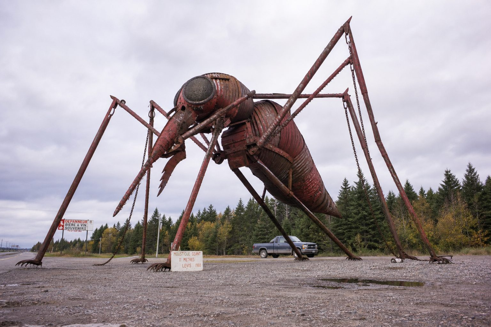
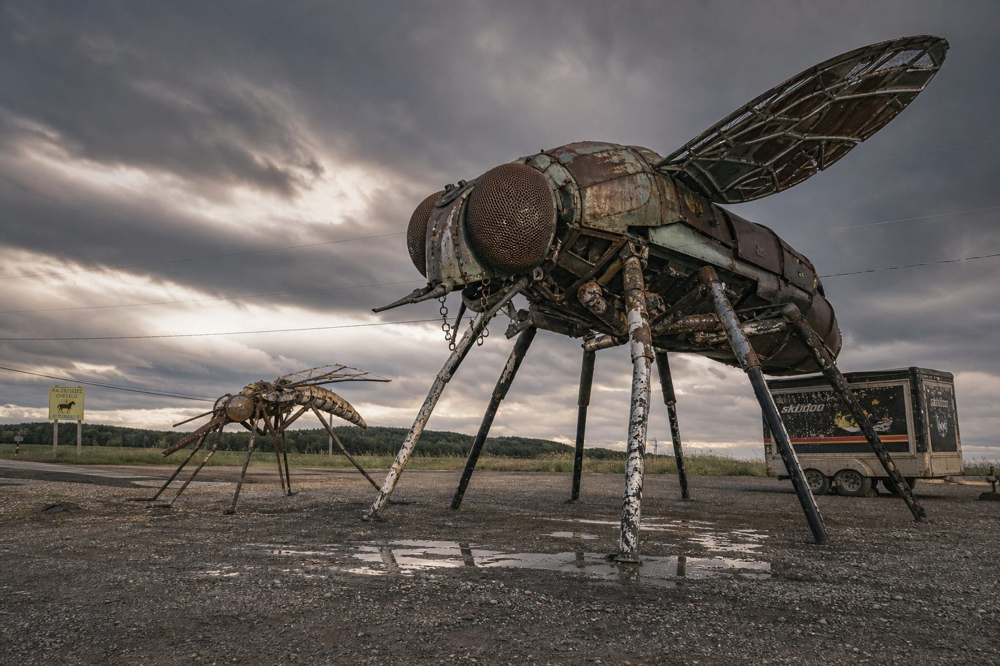
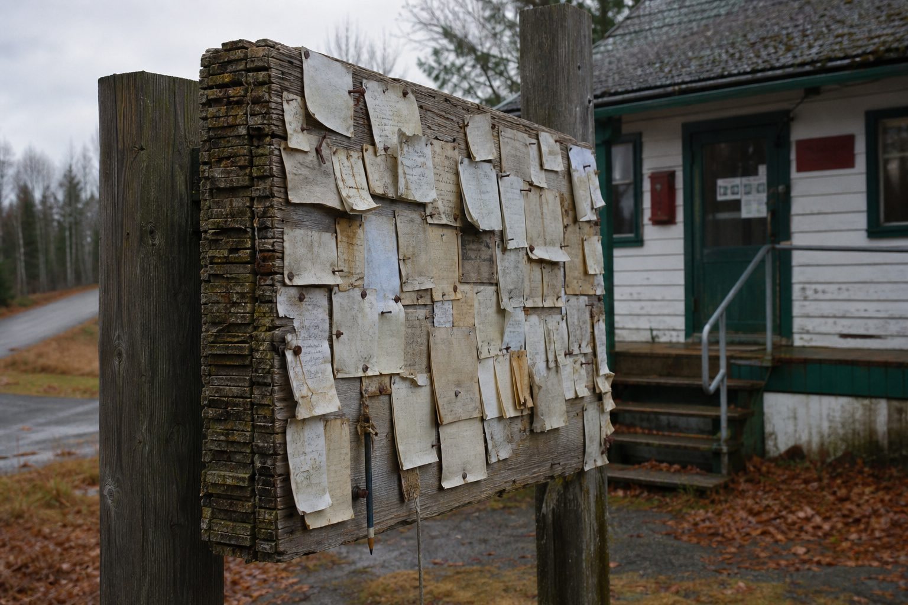
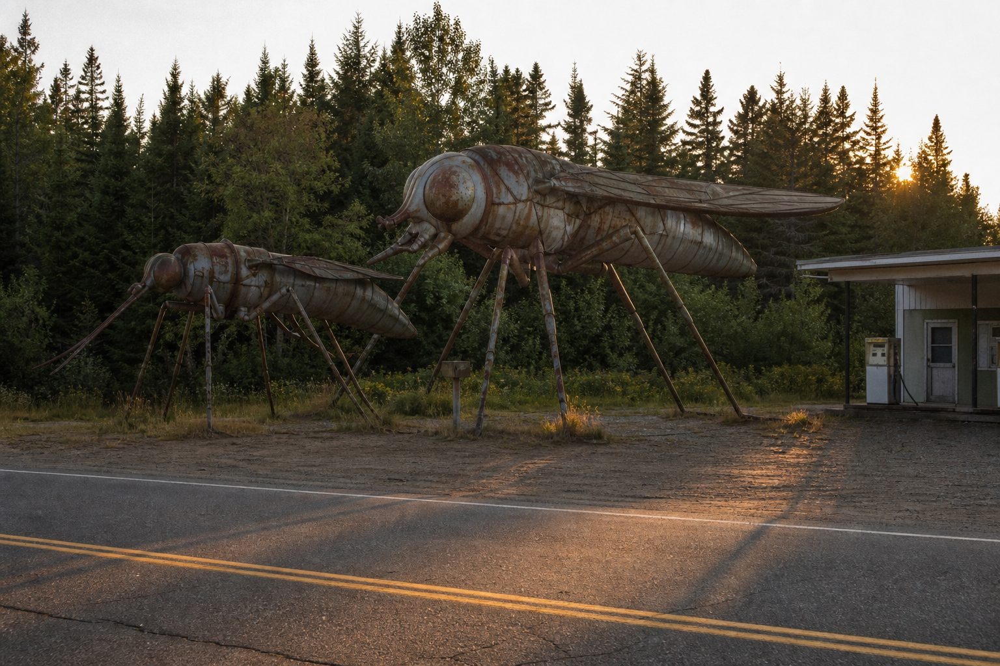
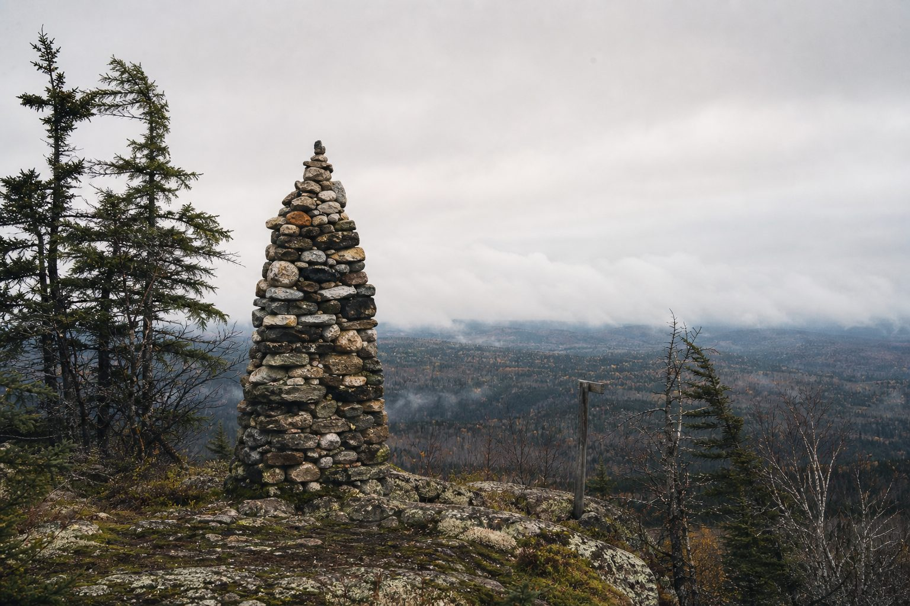
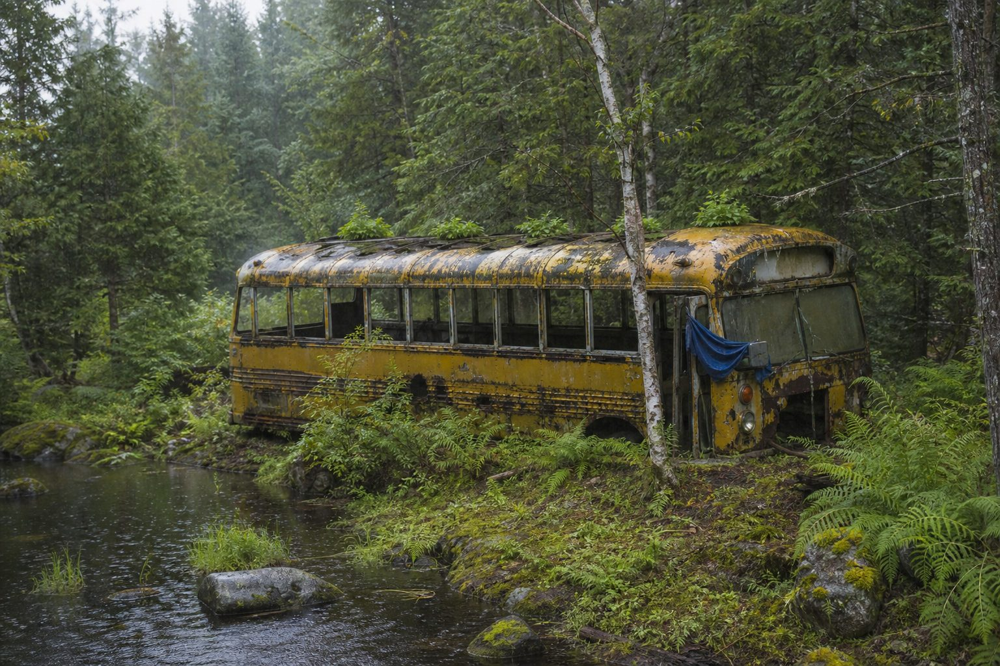
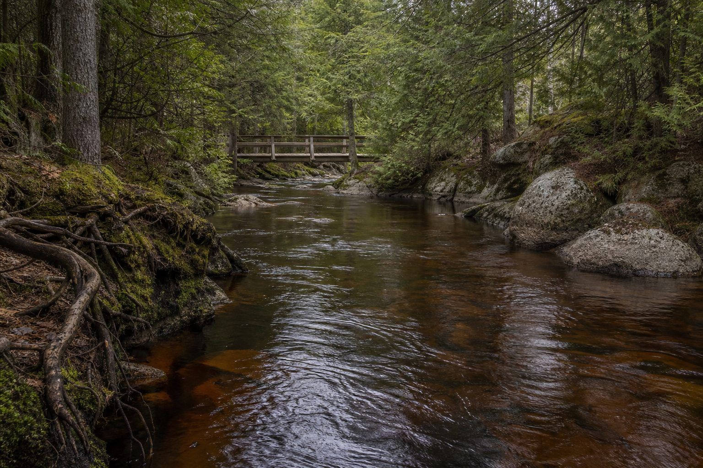
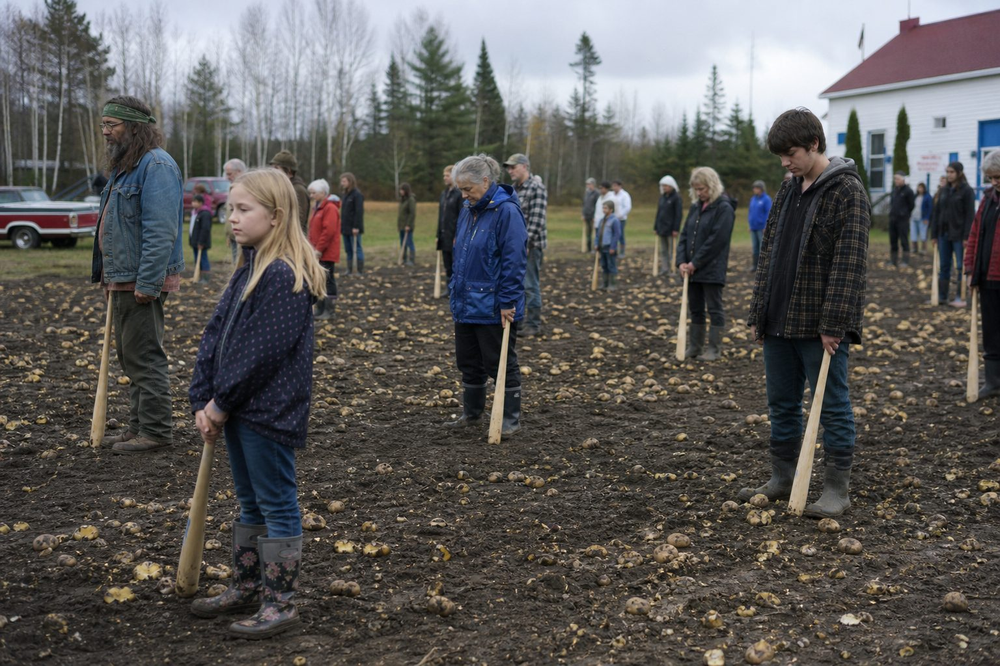

Come See The Things
The Bureau was founded in 1984 by Ginette Lemay, who felt the town was being modest to the point of rudeness. What follows is the official register of things worth stopping the car for.

Eleven metres, welded from culvert pipe, farm gate hinges and one entire snowmobile. Erected in 1988 by Big Yvon. It was meant to be the world's largest, but a town in Manitoba had gotten there first and was, unfortunately, bigger.
Chimoubongo declined to extend the statue. The plaque reads: SECOND LARGEST. WE KNOW. WE ARE FINE.

Fourteen metres. Built three years later by Big Yvon's brother Little Yvon, who says only that "the mosquito looked lonely." It is positioned so that between 4 and 6 p.m. in summer its shadow falls entirely across the mosquito.
Both brothers still eat Thursday soup at the same table and have not discussed it in thirty-four years.

A cedar board where anybody may nail up an apology, signed or not, deserved or not. The oldest legible one says only "the barn thing, I did it, 1974." Nothing is ever removed: when it fills, a new board goes over the top, and it is now eleven boards thick.

Half past five, late August. The shadow reaches the gas station, and the gas station closes early on purpose.

A pile of stones Alphonse-Réal began in 1972 and adds six a year to. Assessed in 2006, it held stones from at least nine locations, three of which are not in Québec. The instruction to visitors: "You may add a stone if you have carried it more than a day."

The original 1961 school bus, sunk to the axles, growing tomatoes through the roof vents. You may sit in it: the fourth seat frame from the back is the good one. In 2011 a museum offered to restore it. The vote took nine minutes and was unanimous.
While You're Here
Forty-one hectares of old white pine that has never been cut. You may walk in it. You may not bring a chainsaw, a drone, or an opinion about forestry.
Every Thursday, 5 p.m., the long table behind the post office. Nobody organizes it. It has never once not happened. Bring a full jar if you want to be remembered fondly.
A marked loop through the north ridge where talking is discouraged. Alphonse-Réal walks it at 4 a.m. If you join him, do not speak first.
The creek. It is cold. It is always cold. Locals go in year-round and are annoyingly serene about it.

The creek is cold even when the town says it is not. The bridge holds, but it does not like being hurried.
The main event
On the third Saturday in September the town gathers in the field behind the post office to hold a quantity of potatoes responsible for something they did not do. It has run since 1976 and it is taken seriously.
In 1975 the potato crop failed. It came up small, waxy and grey, and everyone who ate it felt off for a couple of days. The word that kept getting used at the November 4th town meeting was vibes. A motion was raised to hold the potatoes responsible. It passed.
In 1998 a soil study found the crop had taken up naturally occurring selenium. The potato was scientifically innocent. The town read the report aloud, accepted it, and voted 31 to 4 to continue. The event was renamed that same evening, and the potatoes are now addressed by name before they are struck.

The field behind the post office, third Saturday in September. Bats are provided.
The order of the day
Third Saturday in September · The field behind the post office · Bats provided
Visitors are welcome and are given a bat. Two rules: you may not bring your own potato, and you may not bash anything that was not a potato when the day started.
Enquiries may be addressed to the Bureau of Tourism, care of the post office. Expect a reply within three weeks or 1987, whichever comes first. Ginette, Director.